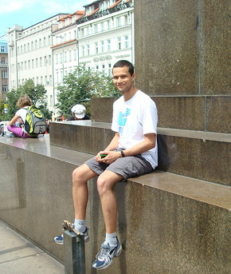

About Filipe

I grew up (mostly) in Southeast Brazil, but headed South to Universidade Federal do Rio Grande, where I received a Bachelor of Sciences in Oceanography. After college I attend the Universidade de São Paulo. I received a Masters of Science in Physical Oceanography in August 2005. I am currently a Ph.D. candidate in Marine Sciences at School of Marine Science and Technology.
Outside of academics, I have always been active in the outdoors. I love camping, biking and hiking. Running has been a part of my life since about 2005. I've run numerous 5 k circuits. I also try to participate in longer circuits (but just for fun) like this one or maybe this one.
Where to find Filipe:
falvarengafernandes at umassd.edu